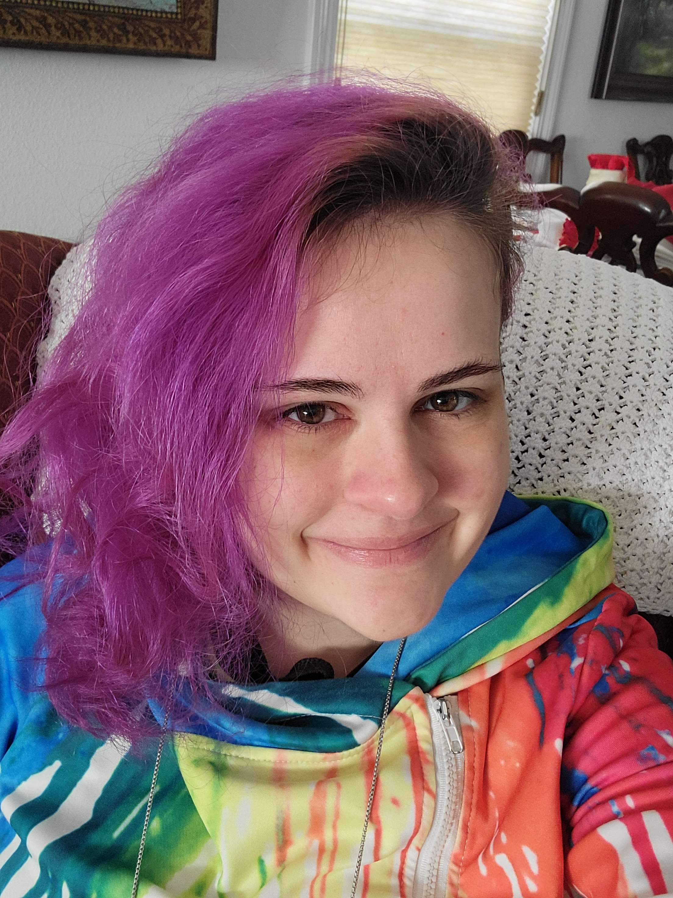

CIS 128 Mobile Web App Development

My name is Natalie Steffen and I have a BS in Video Game Art & Design, and aim to work in the video game industry as a prop or level designer, or as a programmer. I love gaming (both video and tabletop), but also doing crochet and cross stitch when I find the time. Before coming back to school, I worked for almost a full year in live events in 2019-2020 as a 3D visualization artist, until covid forced a move into virtual events, where I worked for 2 years, and my knowledge of 3D modeling and design enabled my company to offer a unique online event experience.
I am taking this class because I would like to expand my knowledge of web development in a formal manner instead of being self-taught as I am now. Also, I am working on getting an AS in Computer Science Applications and Development, and CIS 128 is a requirement for that degree.
Technologies for this class
Resources
-
w3schools - this website offers great reference and advice for many programming languages, including HTML, CSS, and JavaScript.
-
geeksforgeeks - This website has many HTML and CSS tutorials and templates that could be helpful as reference throughout this class.